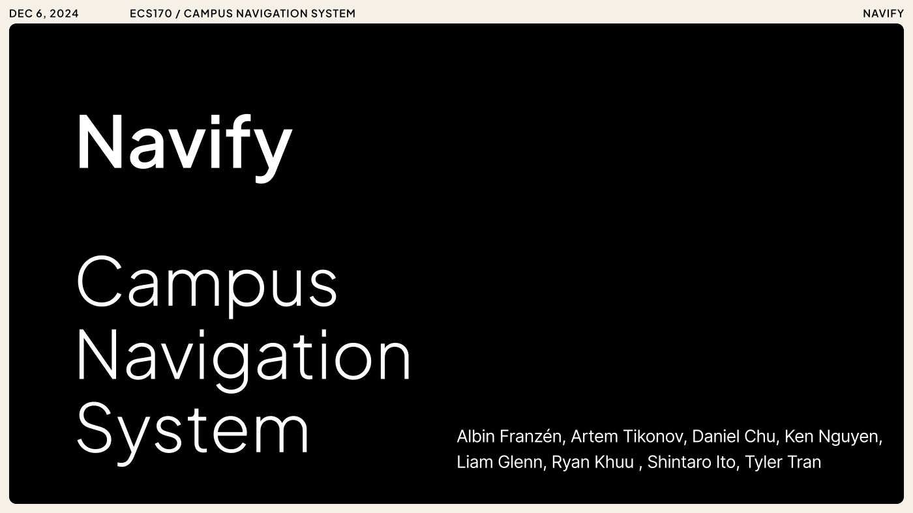
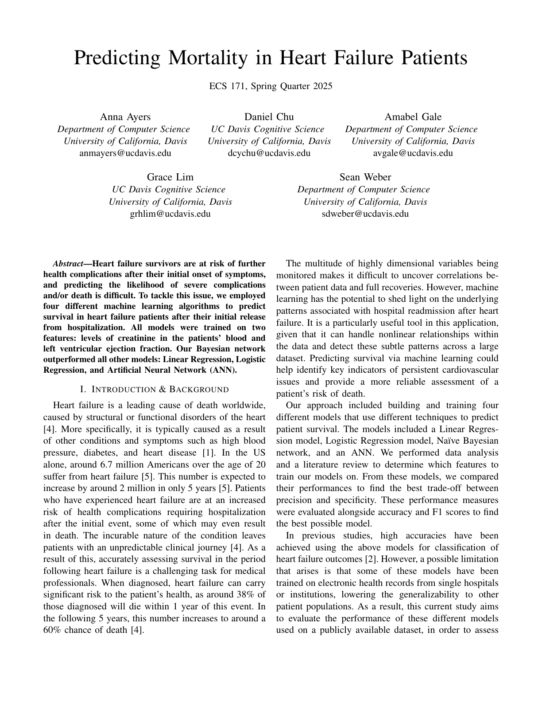
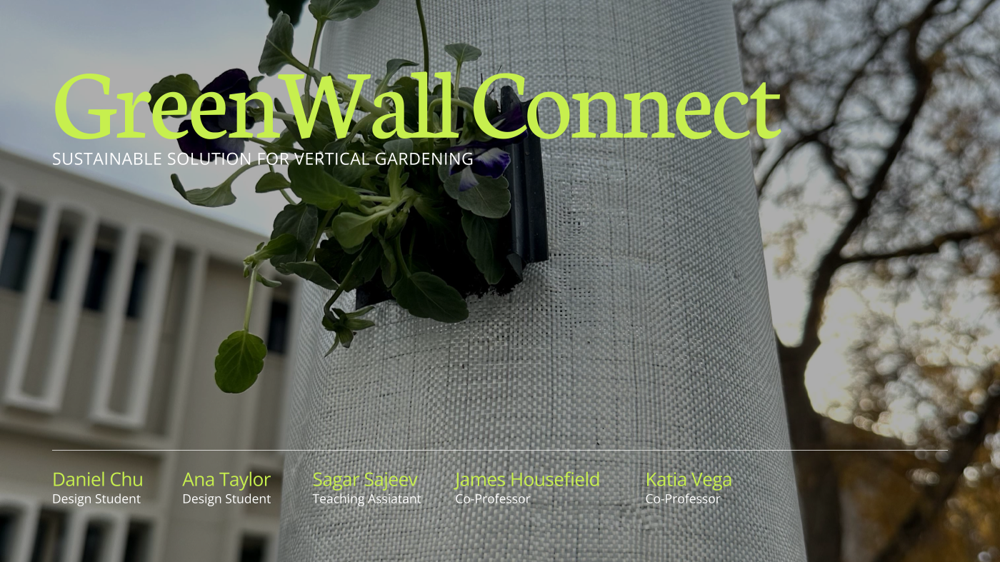
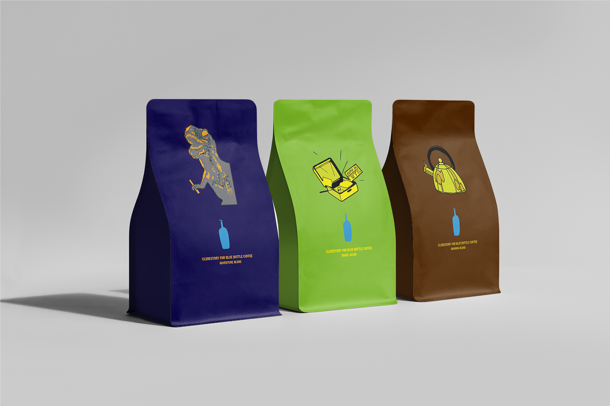
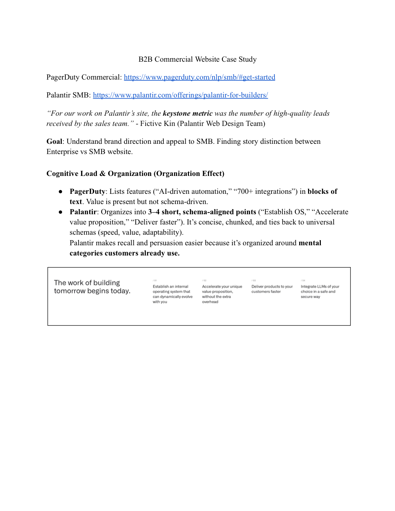

Navify
Indoor and outdoor navigation system using A* pathfinding, computer vision, and contextual routing models.
Open PDF
Indoor and outdoor navigation system using A* pathfinding, computer vision, and contextual routing models.
Open PDF
Compared four machine-learning models on imbalanced clinical data to identify mortality risk after heart failure.
Open PDF
A product development project exploring the design process of a sustainable product.
Open PDF
Research-driven analysis of digital interactions, customer experience, and communication flow.
View case study
A study focused on user engagement patterns and what drives stronger interaction online.
Open PDF